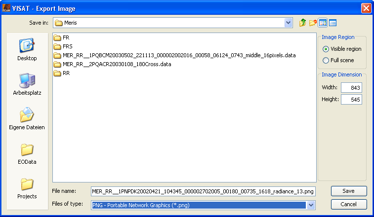

| Export Image | |
This command allows the export of the displayed image of the active Image View to an image file.
The save image dialog offers the possibility to choose whether the visible region or the full scene should be exported. The exported image exhibits all layers that are visible in the Image View.
It is possible to specify the dimension of the exported image, i.e. its width and height in pixels. Note that the aspect ratio of the exported image will always be the same as the aspect ratio of the Image View or the aspect ratio of the full scene, depending on the selected image region. Also note that the dimension of the exported image may be larger or smaller than the dimension of the image displayed in the Image View.
The dimension of the exported image is constrained by the amount of available memory. When exporting the image might fail because the memory required by the exported image comes close to the amount of available memory a warning message is displayed. Nevertheless, exporting the image may succeed. An error message is displayed when the image export has actually failed. In this case either increase the amount of available memory or reduce the dimension of the exported image.
The supported image formats are:
